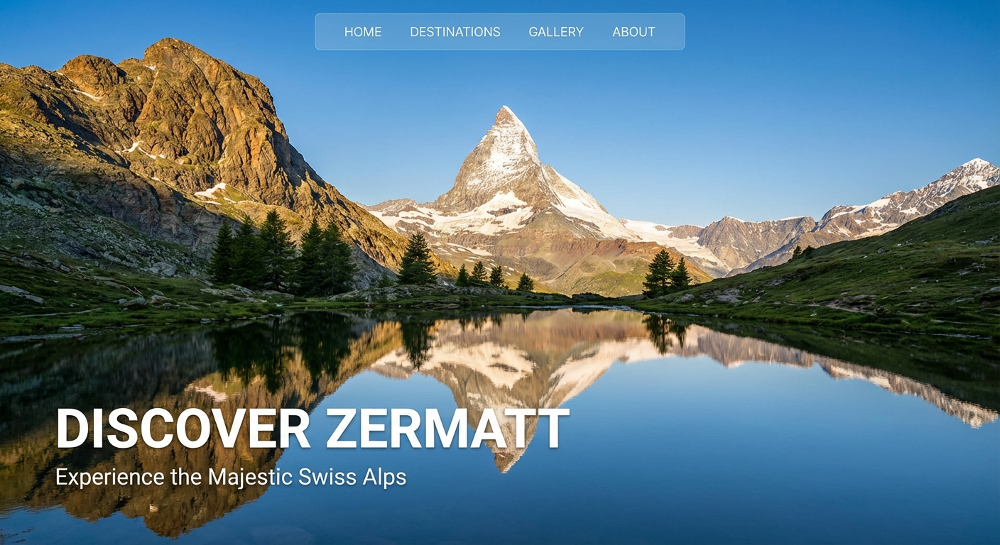

Captured Moments
Exploring the world through a lens, one destination at a time.

Swiss Alps
Zermatt, Switzerland
Neon Nights
Tokyo, Japan
Golden Hour
Bali, Indonesia
Wild Patagonia
Torres del Paine, Chile
Exploring the world through a lens, one destination at a time.

Zermatt, Switzerland
Tokyo, Japan
Bali, Indonesia
Torres del Paine, Chile